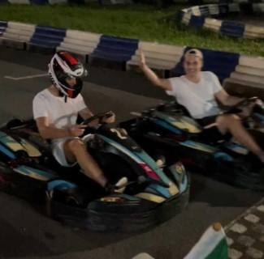

Eusebiu Moldovan (Seb)
Born in the countryside of Romania, moved to the UK in 2016 and I've been living here ever since. I picked up programming early on and am now a full time student at the University of Liverpool pursuing a Bachelor's in Computer Science. My short term goals are to graduate from University and to start my career in the tech industry. You can find my CV/Resume at the bottom of this page.
Racing go-karts late at nightAside from Computer Science, I've always been interested in Mechanical Engineering , but chose against pursuing it as a career. I prefer studying Maths and Science over English or other subjects. This was evident early on in my life and further highlighted when choosing a degree.
I fill most of my spare time by either learning more about the interests already mentioned, or by just being a young adult. Going out, playing video games, watching football games, racing go-karts, etc.
I look forward to starting my career and working as a software engineer. For now, I keep a look out for great opportunities to learn from others, develop my skills and gain experience by working in the field.